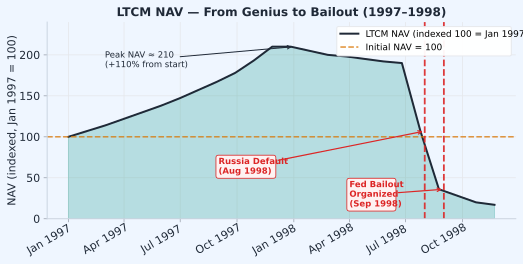
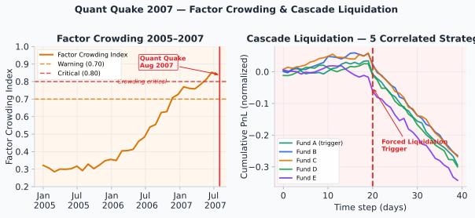
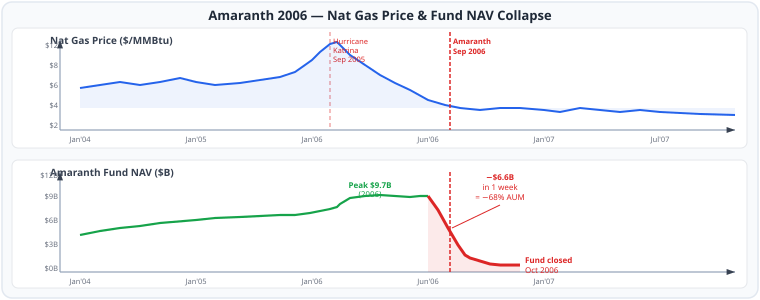

LTCM (Long-Term Capital Management) ก่อตั้งปี 1994 โดย John Meriwether (อดีต Salomon Brothers) ร่วมกับ Myron Scholes และ Robert Merton ซึ่งได้รับ Nobel Prize สาขาเศรษฐศาสตร์ ปี 1997 และทีม PhD จาก Salomon Brothers กองทุนใช้ relative-value arbitrage ใน fixed income และ equity volatility spreads ด้วย leverage สูงมาก
| รายการ | ข้อมูล |
|---|---|
| Peak AUM | $125B assets, $1.25 trillion notional derivatives exposure |
| ผลตอบแทน 1994–1997 | +20%, +43%, +41%, +17% |
| Leverage | ~25:1 (equity $4.7B vs assets $125B) |
| เหตุการณ์สำคัญ | สิงหาคม 1998: Russia default on ruble debt → spreads widened globally |
| ขาดทุน | เดือนสิงหาคม 1998 เดือนเดียว: -44% |
| การช่วยเหลือ | Fed จัด bailout กับ 14 ธนาคาร รวม $3.6B |
| จุดจบ | ปิดกองทุนปี 2000 |
LTCM assume ว่า correlation matrix ระหว่าง strategies คงที่จากประวัติศาสตร์ปกติ ในช่วงตลาดปกติ \(\rho\) ระหว่าง pair strategies ≈ 0.2–0.3 ทำให้ portfolio diversification ดูดี แต่เมื่อ Russia default เกิดขึ้น ทุก strategy กลายเป็น "flight to quality" trade เดียวกัน \(\rho \to 0.9+\) ทุก position ขาดทุนพร้อมกัน
สมการที่แสดงให้เห็น diversification หายไปเมื่อ correlation พุ่งสูง:
$$\sigma_p^2 = \sum_i w_i^2 \sigma_i^2 + \sum_{i \neq j} w_i w_j \rho_{ij} \sigma_i \sigma_j \xrightarrow{\rho_{\text{stress}} \to 1} \left(\sum_i w_i \sigma_i\right)^2$$เมื่อ \(\rho \to 1\) ทุก pair portfolio variance ไม่ได้ลดลงจาก diversification อีกต่อไป — กลายเป็น sum of individual volatilities ซึ่งใหญ่กว่ามาก
LTCM operated at ~25:1 leverage. With $4.7B equity and $125B assets, a 4% adverse move in asset values wipes out equity entirely. ใน normal market ไม่มีทาง 4% adverse move พร้อมกัน — แต่ใน stress scenario มันเกิดขึ้น LTCM's VaR model บอกว่า max daily loss ≈ $35M แต่ actual peak daily loss ≈ $553M (15× ของ VaR!) Leverage คือ force multiplier ของทั้ง return และ disaster

LTCM NAV (indexed Jan 1997 = 100) — จาก peak ≈ 210 ในต้นปี 1998 ลงสู่ 17 ภายในปลายปี การ diversify ระหว่าง strategies ไม่ได้ช่วยเมื่อ correlation collapse
สัปดาห์แรกของสิงหาคม 2007 กองทุน quant ชั้นนำหลายแห่ง ได้แก่ Goldman Sachs GAM, Citadel, AQR, Renaissance, D.E. Shaw ขาดทุนพร้อมกันอย่างไม่คาดฝัน ทั้งที่ยังไม่มีเหตุการณ์ใหญ่ในตลาด (Lehman ยังไม่ล้ม, Bear Stearns ยังไม่ล้ม)
| Fund/Metric | ผลกระทบ |
|---|---|
| Goldman Sachs GAM | ขาดทุน ~$1.5B ใน 3 วัน |
| Sector-wide | ประมาณ $100B+ AUM ขาดทุน |
| Recovery | ส่วนใหญ่ recover ภายใน 2 สัปดาห์ (fundamentals ไม่เปลี่ยน) |
| Permanent loss | บางกองทุน liquidate ก่อน recovery → permanent loss |
Factor models ไม่รู้ว่ากี่คนถือ trade เดียวกัน รู้แต่ correlation ระหว่าง stocks ไม่รู้ position overlap ระหว่าง managers — นี่คือ blind spot ที่ทำให้ cascade รุนแรง:
$$\text{Cascade risk} \propto \frac{\text{AUM}_{\text{factor}} \cdot \text{Corr}_{\text{holdings}}}{\text{Market depth}} \quad \text{ยิ่ง corr สูง + depth ต่ำ → ยิ่งเร็ว}$$
ซ้าย: Factor crowding index ไต่ขึ้น sigmoid ตั้งแต่ปี 2005 จนถึง critical level ก่อน Quant Quake | ขวา: Cascade simulation — 5 strategies ที่ดูเหมือน uncorrelated ขาดทุนพร้อมกันทันทีที่ trigger เกิดขึ้น
Amaranth Advisors (กองทุน hedge fund ขนาด $9.7B) เดิมเป็น convertible arb fund แต่ Brian Hunter ผู้จัดการ portfolio ด้าน energy สร้างผลตอบแทนสูงมากจาก natural gas spreads ในปี 2005 (hurricane Katrina ทำให้ gas spike) → ได้รับ allocation มากขึ้นเรื่อยๆ จนกลายเป็น core strategy ของกองทุน
ราคา natural gas ลดลงจาก $8/MMBtu → $4 (mild winter forecast + high inventory) March-April spread ที่ Amaranth long ลดลงอย่างรวดเร็ว พอพยายาม unwind position ก็พบว่า position ใหญ่มาก ขายแต่ละ lot ทำให้ราคาลงอีก → self-reinforcing loop
Market impact cost จาก position ขนาดใหญ่:
$$\text{Slippage} \approx \frac{\text{Position size}}{\text{ADV}} \cdot \sigma_{\text{daily}} \quad \text{ถ้า } \frac{\text{Position}}{\text{ADV}} > 5\% \text{ → significant market impact}$$Amaranth's nat gas position was estimated at 9% of US open interest. ตาม square-root market impact model, liquidating 9% of open interest costs approximately 3× normal slippage — แต่ในช่วง panic, impact multiplier สูงกว่า 10×
สัปดาห์เดียว (ต้นกันยายน 2006): ขาดทุน $6.6B = 68% ของ AUM ทั้งหมด
กองทุนปิดใน 2 สัปดาห์ถัดมา

บน: ราคา natural gas (/MMBtu) — spike จาก Hurricane Katrina ปี 2005 แล้วลดลงสู่ระดับต่ำในปี 2006 | ล่าง: Amaranth Fund NAV พุ่งขึ้นในปี 2005 แล้ว collapse $6.6B ภายในสัปดาห์เดียวในกันยายน 2006
สองเหตุการณ์นี้มีหน้าตาเหมือนกันบนกราฟ — เหรียญที่ควรอยู่ที่ $1.00 หลุดลงแรง — แต่จบลงคนละแบบสุดขั้ว เหตุผลไม่ได้อยู่ที่ "สถิติ" ของ ε แต่อยู่ที่ กลไก backing เบื้องหลัง anchor ซึ่งเป็นสิ่งที่ ch13B §13B.2 เตือนไว้ว่าต้องตรวจก่อนเทรด peg ว่าเป็น anchor เชิงโครงสร้าง
ทั้งสองเหตุการณ์ดูเหมือนกันตอนเกิดขึ้น — ε (deviation จาก $1.00) พุ่งไกลจาก 0 พร้อมกัน แต่กลไกเบื้องหลังต่างกันโดยสิ้นเชิง:
คำถามที่ต้องตอบก่อนเทรด peg ทุกครั้ง: "อะไรค้ำ peg นี้อยู่จริง — สินทรัพย์จริงที่ตรวจสอบได้ หรือแค่ arbitrage mechanism ที่พึ่งความเชื่อมั่นของตลาด?" คำตอบตัดสินว่า deviation นี้คือโอกาส mean-reversion หรือคือ tail risk ที่ไม่ควรเข้าใกล้
§24.4 คือ peg risk ในโลก stablecoin → §24.5 คือ risk อีกแบบใน options: term structure ที่ invert จาก counterparty panic ▶
ch22 §22.9 สอน IV Term Structure ε โดยใช้ event calendar ที่รู้ล่วงหน้า (FOMC, ETF decision) เป็นตัวอย่าง — แต่ term structure ก็ invert ได้จาก event ที่ ไม่มีกำหนดการ เช่นกัน และนั่นเปลี่ยนวิธีเทรดโดยสิ้นเชิง
สรุป: ก่อนเทรด calendar/term-structure ε ต้องแยกก่อนว่า trigger เป็น event ที่มีวันหมดอายุความไม่แน่นอนชัดเจน (เทรดได้ตาม §22.9) หรือ counterparty/systemic risk แบบเปิดปลาย (ต้องลดขนาด position ลงมาก และเตรียมรับว่า thesis อาจใช้เวลานานกว่าที่ประเมินไว้หลายเท่า หรืออาจไม่ mean-revert ตามกรอบเวลาที่วางแผนไว้เลย)
§24.1–24.5 ครบทั้งกรณี fund-level blow-up และกรณี ε-mechanism พังเฉพาะจุด → §24.6 สรุป 3 patterns ของกรณี fund-level ▶
เหรียญ stablecoin ตัวหนึ่งหลุด peg จาก $1.00 ลงมาที่ $0.90 คุณเห็น z-score ของ ε = (price − $1.00) อยู่ที่ −6σ ซึ่งดูเหมือนโอกาส mean-reversion ที่ชัดเจนมาก
ถาม: ก่อนเปิด long position คุณต้องตรวจสอบอะไรก่อน และทำไม z-score เพียงอย่างเดียวถึงไม่พอสำหรับการตัดสินใจนี้
ต้องตรวจสอบกลไก backingของเหรียญก่อนอื่นใด: (1) มี real asset (cash/T-bill) หนุนหลัง 1:1 ที่ตรวจสอบได้จริงไหม (เช่น attestation report) หรือ (2) พึ่งพา algorithm/reflexive mechanism ที่ไม่มี asset จริงหนุนหลัง
ถ้าเป็นแบบ (1): z-score สุดขั้วอาจเป็นโอกาสจริง (คล้าย USDC มี.ค. 2023) แต่ยังต้องเช็คต่อว่า trigger คืออะไร (bank run ชั่วคราว vs insolvency ถาวรของผู้ออก) และมี capital พอถือรอ "regulatory backstop" หรือการแก้ปัญหาโดยไม่โดน margin call ก่อนหรือไม่
ถ้าเป็นแบบ (2): z-score สุดขั้วไม่ใช่สัญญาณซื้อ — เป็นสัญญาณเตือนว่ากลไกที่เคยรักษา peg อาจกำลัง reflexively เร่งการพังให้เร็วขึ้น (คล้าย UST พ.ค. 2022) ซึ่งเป็น absorbing state ไม่ใช่ OU mean-reversion — z-score ที่สูงไม่มีความหมายทางสถิติในกรณีนี้เพราะ underlying process ไม่ใช่ OU process ตั้งแต่แรก
สรุป: z-score บอกแค่ "ห่างจาก mean แค่ไหน" — มันไม่เคยบอกว่า "process นี้เป็น OU จริงไหม" ต้องตรวจข้อสมมตินั้นก่อนด้วยความเข้าใจกลไก ไม่ใช่ด้วยสถิติเพียงอย่างเดียว
คุณเห็น BTC IV term structure invert แรง (front IV > back IV มาก) 2 สถานการณ์: (ก) 2 วันก่อนการประกาศดอกเบี้ย FOMC (ข) วันที่ exchange รายใหญ่แห่งหนึ่งประกาศระงับการถอนเงินกะทันหันเพราะข่าวลือปัญหาสภาพคล่อง
ถาม: ทั้งสองสถานการณ์นี้ควรเทรดด้วย calendar-spread playbook เดียวกัน (short front, long back) ในขนาด position เท่ากันหรือไม่? อธิบาย
ไม่ควรใช้ขนาดเดียวกัน แม้ mechanic ทางสถิติจะดูเหมือนกัน:
(ก) FOMC: มีวันหมดอายุความไม่แน่นอนชัดเจน (ผลประกาศออกแล้วจบ) — event risk premium ใน front IV จะ crush ภายในกรอบเวลาที่คาดการณ์ได้ค่อนข้างแม่นยำ (§22.9) → เทรดตาม playbook มาตรฐานได้ในขนาดปกติ
(ข) Exchange ระงับถอนเงิน: ไม่มีวันหมดอายุที่รู้ล่วงหน้า — อาจลุกลาม (contagion), อาจกินเวลาหลายสัปดาห์, และที่สำคัญคือ exchange ที่คุณใช้เทรด options อาจมีความเสี่ยงเชื่อมโยงกันเอง (counterparty risk) → ควรลดขนาด position ลงมาก, เตรียมรับว่าอาจไม่ mean-revert ตามกรอบเวลาที่วางแผน, และพิจารณาความเสี่ยงที่ exchange เองอาจมีปัญหาด้วย (ดู §24.5 กรณี FTX)
| Event | Root Cause | Warning Signal | Risk Control |
|---|---|---|---|
| LTCM 1998 | Correlation collapse under stress | VaR spike + funding stress | Stress-test \(\rho \to 1\) scenario |
| Quant Quake 2007 | Factor crowding + cascade liquidation | Short interest, factor purity, inter-strategy correlation | Position overlap monitoring |
| Amaranth 2006 | Position size > market depth | ADV ratio > 5% | Hard ADV cap per strategy |
VaR model ที่ใช้ historical correlation (รวม calm periods) จะ underestimate risk ในช่วง stress อย่างรุนแรง. LTCM's VaR model บอกว่า max daily loss ≈ $35M แต่ actual peak daily loss ≈ $553M (15×!). Correlation อาจ jump จาก 0.2 → 0.95 ภายใน 2 สัปดาห์ในช่วง systemic stress — ซึ่ง historical VaR ที่ใช้ data 1–2 ปีย้อนหลังจะไม่มีวันเห็น
แนวทางแก้ไข: Stressed VaR (Basel III requirement) — คำนวณ VaR โดยใช้ data จากช่วง crisis เท่านั้น (เช่น 2008, 2020) แทน historical window ปกติ
ทั้งสามกรณีข้างต้นวิเคราะห์ด้วยข้อมูลของ fund/instrument ที่ "รอด" มาจนมีการบันทึกละเอียด — แต่ backtest ของ pair selection ปกติ (ch5 §5.8) ก็มี bias เดียวกันในสเกลเล็ก: ดึงรายชื่อ symbol ที่ active วันนี้มา backtest ย้อนหลัง โดยเหรียญ/สัญญาที่ delist หรือคู่ที่ cointegration แตกจนถูกถอดออกจากรายการหายไปก่อนถึงมือคุณ — และเคสเหล่านั้นมักเป็นกรณี "แตก" ที่แรงที่สุดพอดี ทำให้อัตราการรอดและ tail loss ของกลยุทธ์ pairs ถูกประเมินต่ำอย่างเป็นระบบ เช่นเดียวกับที่ VaR model ของ LTCM มองไม่เห็น correlation ที่ยังไม่เคย spike มาก่อน — แก้ด้วยการเก็บ point-in-time universe แทนการดึงรายชื่อปัจจุบันมาย้อนอดีต (รายละเอียดเต็ม: ch5 §5.8)
วิธีคำนวณ:
กำหนด: \(N = 20\) strategies, \(w_i = 1/20\), \(\sigma_i = 2\%\) ทุก strategy
Case 1: ρ = 0.2 (normal market)
$$\sigma_p^2 = N \cdot w^2 \cdot \sigma^2 + N(N-1) \cdot w^2 \cdot \rho \cdot \sigma^2$$ $$= \frac{\sigma^2}{N}\left[1 + (N-1)\rho\right] = \frac{0.02^2}{20}\left[1 + 19 \times 0.2\right]$$ $$= \frac{0.0004}{20} \times 4.8 = 0.000096$$ $$\sigma_p = \sqrt{0.000096} \approx 0.98\%$$
Case 2: ρ = 0.95 (stress scenario)
$$\sigma_p^2 = \frac{0.0004}{20}\left[1 + 19 \times 0.95\right] = \frac{0.0004}{20} \times 19.05 = 0.000381$$ $$\sigma_p = \sqrt{0.000381} \approx 1.95\%$$
เทียบ: \(1.95\% / 0.98\% \approx 2.0\times\) — portfolio vol เพิ่มขึ้น 2 เท่า เมื่อ ρ ขึ้นจาก 0.2 → 0.95
สังเกต: เมื่อ ρ → 1 สมบูรณ์ \(\sigma_p \to \sigma_{\text{individual}} = 2\%\) (diversification หายไปทั้งหมด) ซึ่งสูงกว่า ρ=0.2 case ถึง 2.04×
วิธีคำนวณ Square-Root Market Impact:
$$\text{Impact} = \sigma_{\text{daily}} \times \sqrt{\frac{\text{Position}}{\text{ADV}}}$$ $$= 3\% \times \sqrt{\frac{6{,}400}{80{,}000}}$$ $$= 3\% \times \sqrt{0.08}$$ $$= 3\% \times 0.283 = 0.85\%$$
ถ้า position มูลค่า $500M: impact cost ≈ $500M × 0.85% = $4.25M ต่อการ liquidate ครั้งเดียว
ในช่วง panic (multiplier 10×): $4.25M × 10 = $42.5M — และนี่คือต้นทุนของการ unwind แค่วันเดียว ถ้าต้อง unwind ทั้งหมด 6,400 contracts ใน market ที่กำลัง panic cost จะสูงกว่านั้นมาก
บทเรียน: ต้องคำนวณ market impact ก่อน enter position ขนาดใหญ่ ไม่ใช่หลังจากต้องการออก
คำนวณ Total Forced Liquidation:
กองทุน A: $500M
5 funds × $200M each (40% overlap): $1,000M = $1.0B
Total = $500M + $1,000M = $1.5B
$$\text{Ratio to daily volume} = \frac{\$1.5B}{\$400B} = 0.375\%$$
ฟังดูเล็กน้อย แต่ในสถานการณ์จริงของ Quant Quake:
สรุป: แม้จะดูเล็กน้อยเมื่อเทียบ market ทั้งหมด แต่เมื่อ concentrated ใน specific factors จะทำให้ราคาถล่มลงมากกว่าที่ risk model คาดไว้
Statistical Arbitrage · บทที่ 24 — บทเสริม Case Studies
LTCM 1998 · Quant Quake 2007 · Amaranth 2006 · UST/USDC Depeg 2022–23 · FTX Vol Event 2022
ประวัติศาสตร์ซ้ำตัวเอง — correlation collapse, crowding, liquidity illusion, anchor ที่พังต่างแบบ, และ term structure ที่ invert จาก counterparty risk